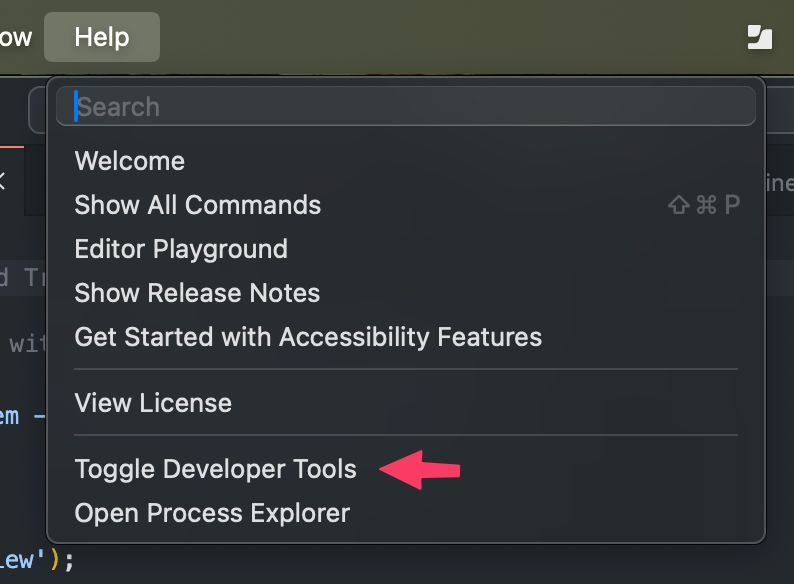

כולם מדברים על background agents, אני בניתי foreground agent.
פורסם במקור ב LinkedIn
כולם מדברים על background agents, אני בניתי foreground agent.
קורסור, צ׳אט ג׳יפיטי, ועוד מציעים אפשרות להריץ ״סוכן קוד״ שירוץ אוטונומית מאחורי הקלעים. יש עם זה מספר בעיות - האחת היא שלא רואים מה בפועל מתבצע, השניה היא שזה דורש אישורי Privacy, והשלישית שיש לזה עלויות נוספות.
מכיוון שאני כבר עובד באופן שוטף עם Cursor, והייתי צריך להריץ משימה מורכבת, מצאתי פתרון שיחסוך לי את הצורך לשבת ולאשר כל שלב בתהליך של Cursor -
וזה לא היה מורכב בכלל.
פתחתי את ה-Developer Tools של Cursor דרך תפריט ה-Help, ביקשתי מצ'אט ג'יפיטי סקריפט קטן ב-JS, והדבקתי אותו לקונסול.
הסקריפט: בכל פעם שהופיעו הודעות שמבקשות ממני לאשר משהו - "accept", "run", "25 tools limit" - הוא לחץ עליהן בשבילי.
השיטה: העתקתי את ה-HTML שייצג את אזור הכפתור, וביקשתי בפרומפט שיכתוב סקריפט שכל 15 שניות ידגום האם זה מופיע ואם כן ילחץ. אני אוהב גם להסביר עבור מה זה - ״כדי שאוכל להדביק את זה ב-Devtools של Cursor״. זה תמיד עוזר לתת Context ל-AI.
התוצאה: הרווחתי המשכיות עבודה, כמעט זהה ל-Background agent, אבל בשליטתי.
אז במקום להשתמש ב-Agent ש"ברקע", בניתי אחד שהוא פשוט מולי - מקליק בשמי, ומאפשר לזרום באמת.
כיף להנדס מחדש את הגבולות של הממשק עצמו, ומדהים לראות שזה עבד בצורה חלקה - מספר דקות אחרי חזרתי למחשב כדי לגלות שהמשימה שלי הושלמה בהצלחה ובמלואה.
הערה אחרונה קטנה וחשובה: זה מעולה לפרויקטים קטנים ולפיתוח בסטייל וייב-קודינג (בלי הצורך לעקוב אחרי איכות התוצר של הקוד) אבל יכול להיות הרסני לשינויים בפרויקטים קיימים.
בנוסף, זה יכול לצאת משליטה מהר מאוד ומבזבז טוקנים.
לכן אם אתם מחקים את השיטה - השתמשו בתבונה ובזהירות, וגם אם הוא רץ לבד - תעקבו אחרי כל מה שהוא עושה.
